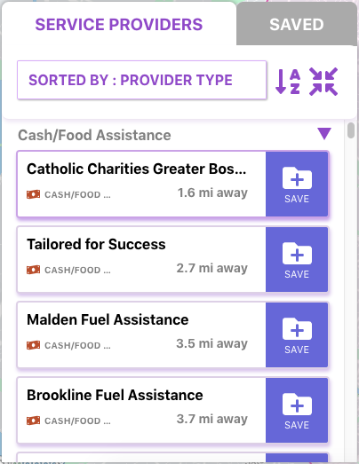
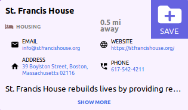
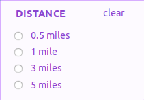
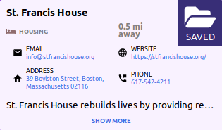
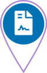

Refugees Welcome! is a 501(c)3 nonprofit embedded in the University of Massachusetts Boston’s Center for Peace, Development, and Democracy. [RW!]’s mission is to strengthen and streamline immigrant and refugee services across the greater Boston area. The organization does this by engaging with migrant service providers through a participatory line of inquiry to solve the most pressing issues facing migrants in our city. [RW!] serves as a platform for organizing immigrant and refugee services, provides capacity building trainings for organizations, advocates for the expansion of immigrant and refugee services, and assists service providers by helping to fill any programmatic gaps through connecting them with resources, developing new initiatives, and supporting their work.
To assist refugee service providers, Refugees Welcome! focuses on five thematic areas (or teams): Research, Communication, Capacity Building, Technology, and Grant Writing and Fundraising. The Leadership Team, Research Fellows, and Interns work on specific teams to develop programmatic activities that are geared towards our clients’ needs.
To find out more about Refugees Welcome!, visit refugeeswelcomehome.org or email refugeeswelcomehome@gmail.com.
The Migrant Service Map is an interactive mapping tool designed to streamline common workflows for service providers who assist immigrant and refugee communities. It helps providers locate organizations in Boston – such as community centers, education resources, legal and healthcare assistance – and share these with their clients.
Built in 2019, the map is a result of Refugees Welcome!’s ongoing research into methods to improve immigrant and refugee service provision. Development has been a joint effort between Refugees Welcome!, the MapBox Community Development Office, and Code for Boston.
The map is populated by a list of approved locations compiled by Refugees Welcome! and contains up to date contact information for the organizations included.
Additional features to allow providers to add, edit and update their own information as well as expanding to new locations are in the project’s roadmap, and depend on funding.
Our Research Team is searching for funding to expand the application’s borders beyond Boston – to multiple nonprofit fields and cities.
Moving forward, the project will solicit nonprofits across Boston for feedback during every product management phase to make the application easily accessible and usable by immigration service providers. For partnership and investment inquires, please email charla.burnett@refugeeswelcomehome.org.
The Migrant Service Map helps migrant service providers explore the organizations serving immigrant and refugee communities in the Boston area. They can then make personalized recommendations for their clients, based on the type of assistance an organization offers and its location convenience.
Providers can use the map to:
Refugees Welcome! compiled up to date information for the service providers included in the map.
Begin a search for appropriate providers by first narrowing down which services are needed, and then further selecting providers appropriate to the clients’ needs and location.
The Migrant Service Map enables the user to choose service providers from within a selected area of the city. In order to search for all providers, click select all in the top PROVIDER TYPE box. This will display providers of all types in both the list and the map.
Use the DISTANCE and NEAR boxes to define the search circle on the map. You can choose the center location of your search circle first, or its size.
Click the DISTANCE box to enlarge or reduce the search area and click a button to choose the distance from the search circle center.
Click the NEAR box to indicate the geographical center for your search. Enter the street address or name of the location in the text box. This could be your clients’ workplace, school, home or some other convenient spot. Click the enter key to apply your choice. This icon will appear in the center of the search circle.The PROVIDER TYPE menu in the top bar displays service providers by type. You can select from this list to create a custom list of providers for your client. These providers will be selected from those available in an area centered on your chosen location.
From the top bar, click the PROVIDER TYPE menu and click on the corresponding boxes to choose the types of service providers to include in your custom list. The chosen service providers will appear under the SERVICE PROVIDER tab and in the map. Clicking on a box a second time will remove the service provider from the SERVICE PROVIDER tab list and the map.
From the top bar, click the PROVIDER TYPE menu and click on the corresponding boxes to choose the types of service providers to include in your custom list. The chosen service providers will appear under the SERVICE PROVIDER tab and in the map. Clicking on a box a second time will remove the service provider from the SERVICE PROVIDER tab list and the map.
If you haven’t selected a search area, the default area will display around the center of Boston.
The area of the search can be increased or decreased using the button.
The icon will enable you to display all of the locations of your expanded provider cards in the searched area on the map.
If you would like to clear all of your provider type selections, click “clear all” in the PROVIDER TYPE menu. To start a new search, simply select your new desired provider types from the PROVIDER TYPE menu. If you’d like to specify a central location and distance circle size, type a location into the NEAR box and select a distance from the DISTANCE dropdown respectively.
The service providers you have chosen will appear under the SERVICE PROVIDERS tab.
You can expand an individual service provider listing to view more information by clicking in the listing box. Clicking the listing box a second time will minimize the listing.
By default, the results list under the SERVICE PROVIDER tab will be alphabetical. Use this icon to change the list from alphabetical (a to z) to reverse order (z to a).
The list of selected SERVICE PROVIDERS can be further sorted for easier exploration and selection. Click on the SORTED BY: box, and select from one of the offered sort criteria.
If you are sorting your SERVICE PROVIDERS by DISTANCE, use the icon to change the list from ascending distance (closest to furthest) to descending distance (furthest to closest).
Use the PROVIDER TYPE menu in the top bar to add or remove provider listings of a given type from the SERVICE PROVIDER list.

Here you will find contact information such as address, phone number, email, website, mission, and provider type. If you’d like more information about the provider, click on SEE MORE at the bottom of the listing to expand the listing further.
Click the NEAR box to indicate the geographical center for your search. Enter the street address or name of the location in the text box. This could be your clients’ workplace, school, home or some other convenient spot. Click the enter key to apply your choice. This icon will appear in the center of the search circle.
Click the DISTANCE box to enlarge or reduce the search area and click a button to choose the distance from the search circle center.

You can specify different distances, and only the providers within the distance circle you specify will be shown on the map and the list.
Each pin icon on the map represents at least one service provider. If it is visible on the map, a service provider will also be listed in the SERVICE PROVIDERS tab. When you click on the pin icon of a service provider on the map, the SERVICE PROVIDERS tab will present the listing and expand it. Use the SAVE button in the listing to add it to the list under the SAVED (custom) tab.
Once a provider is saved, the listing in the SERVICE PROVIDERS tab has a SAVED icon where the SAVE button was like in the image below. To unsave a provider, click this SAVED icon.

Add a provider to the customized list by clicking the SAVE button on the individual listing under the SERVICE PROVIDER tab. The listing will be added to the SAVED tab, which you can view by clicking that tab.
Once a provider is saved, the listing in the SERVICE PROVIDERS tab has a SAVED icon where the SAVE button was like in the image below. To unsave a provider, click this SAVED icon.
The icons on the map indicate the location of service providers.
If an icon indicates the location of a single provider, hovering over that icon will display the name of the provider. The name which is displayed is not clickable.
If the icon represents multiple listings in close proximity, a box will pop up over the icon that will list all the providers at that location. The listings in this box are also not clickable.
If you hold the mouse over a listing in the SERVICE PROVIDERS tab, the icon on the map will turn green.
Clicking on an icon will display the name of the organization in the top of the SERVICE PROVIDERS tab, animate the icon and cause the icon to turn yellow. The icon will remain yellow as long as the listing is open in the SERVICE PROVIDERS tab.
If the pin icon represents multiple listings in close proximity, clicking on it will zoom in to the map at that location.
When you have selected a listing, whether individual or multiple, the corresponding map pin will animate and turn yellow. A pin will remain yellow as long the provider listing is expanded in the list. You can have multiple listings open at the same time in the SERVICE PROVIDERS tab. When you minimize the listing in the SERVICE PROVIDERS tab, the map icons will return to their original colors.
| Indicates the location of a service provider. See below for the particular icon used to distinguish each type of service provider. | |
| Indicates a location that was identified by your search description. | |
| Indicates a location with multiple services or services in close proximity. You can click once on an icon like this one in order to zoom in and show the providers which have been grouped. The names of the services in the cluster will also be shown in a pop-up when hovering the mouse over this icon. | |
| Service provider icons by type: | |
| Hospital, medical facility, clinic, doctor. | |
 | Job training, occupational training, job help assistance. |
 | Financial assistance, food assistance, nutrition information, food bank, free meals |
 | Legal |
 | Community Center |
|  | Mental health clinic, mental health services, behavioral health |
 | Education, schools, English as a second language programs |
| Resettlement | |
| Housing, shelters | |
Providers may have different privacy requirements and choose not to disclose certain information. If you would like to find the details of a provider that are not listed, please contact that provider directly using other contact information which they have provided.
The potentially sensitive nature of information provided through this tool was considered from the start. The design and development process worked to minimize risk involved in its use.
The tool incorporates privacy and security in a number of ways. All network communications use an https connection which is the most secure type of connection to the internet available. It also does not use or store cookies, which are small bits of information that the browser collects. On a similar note, the tool does not save any information to a database or server, so there is no data gathering or information retained by the app.
Essentially, the development team has taken many steps to make this tool as secure as possible and ensures that the app gathers as little information as is necessary for basic functionality. While we still advise using best internet practices as you would on any site, the map is geared towards safeguarding user identities.
We understand that some organizations providing services to immigrants would like to keep certain information from public access. When registering, they are able to disclose whatever info they are comfortable sharing.
Currently, providers without an address do not appear in results in any form. Including such providers in the results list is a planned but incomplete feature. If your organization would like to see this implemented, please see the following section for details on providing feedback.
To find out more about Refugees Welcome!, visit refugeeswelcomehome.org or email refugeeswelcomehome@gmail.com.
Please navigate to the feedback form for Migrant Service Map here. If you would like a response from the team, please include your email in the feedback form. A team member will respond as soon as possible.